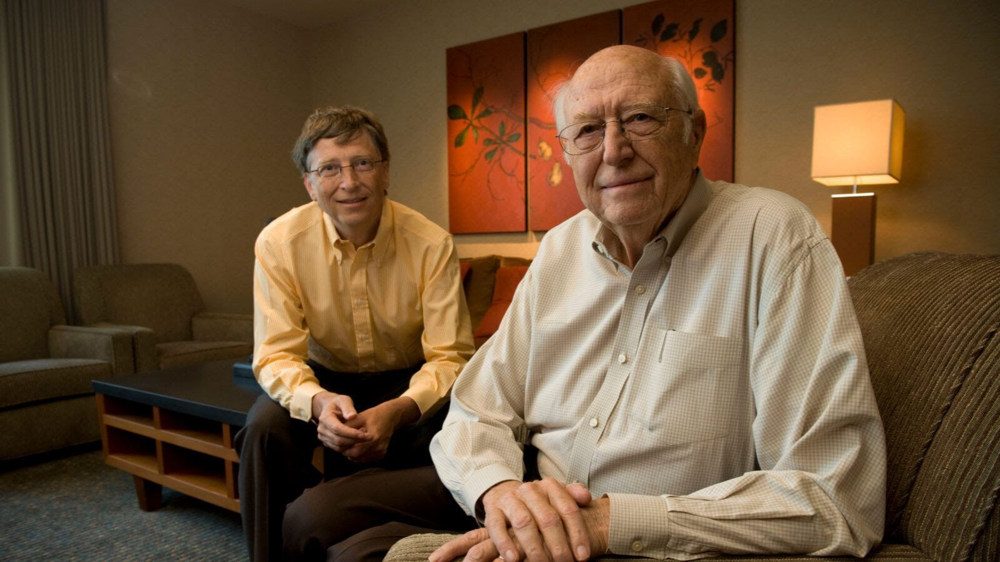

ביל גייטס שם מיליון דולר כדי להאיץ את חקר האלצהיימר בעזרת בינה מלאכותית.
פורסם במקור ב LinkedIn
ביל גייטס שם מיליון דולר כדי להאיץ את חקר האלצהיימר בעזרת בינה מלאכותית.
התחרות החדשה, שהוכרזה על ידי יוזמת נתוני אלצהיימר (AD Data Initiative), מזמינה צוותים מכל העולם לבנות מערכות AI סוכנות שיכולות לסרוק עשרות שנים של מחקר דמנציה ולחשוף פריצות דרך שנעלמו מהעין האנושית. עבור גייטס, זה גם אישי: אביו נפטר מאלצהיימר בשנת 2020.
האתגר הוא לבנות מערכת בינה מלאכותית שמסוגלת להסיק תובנות מורכבות מתוך נתיבי ביולוגיה, מסדי נתונים של ניסויים קליניים ורשומות אבחון רפואיות, כדי לחשוף דפוסים שנשמטו או הוזנחו.
הפרס עומד על מיליון דולר. המערכת הזוכה תונגש בחינם דרך פלטפורמת AD Workbench, ותהיה זמינה לכל חוקרי העולם.
מי שעומד מאחורי האתגר הוא Gates Ventures, בשיתוף שותפים מהממשל האמריקאי, מהקהילה המדעית ומארגוני הסברה. נירנג'ן בוז מ-Gates Ventures הגדיר את זה כ"הזדמנות שאסור לפספס".
אבל גובה הפרס הוא לא הסיפור המרכזי כאן.
ההבטחה של התחום הזה היא עמוקה יותר: להפוך את המחקר בדמנציה מתגובתי לחוזה מראש. לזהות סמנים מוקדמים. לשפר את תכנון הניסויים. ואולי, אפילו, לגלות שימושים חדשים לתרופות קיימות.
יותר ממאה שנות מחקר הניבו קומץ תרופות מאושרות. אבל AI עשוי לשנות את חוקי המשחק. לא בגלל שהוא חכם יותר - אלא בגלל שהוא מסוגל לעבור על כמות נתונים שאף מדען לעולם לא יוכל להכיל.
חצי הגמר יתקיים בדצמבר. הגמר - במרץ, בקופנהגן.
ביל גייטס מנסה ככל יכולתו לעזור לאנושות, מעניין האם הפעם נזכה לראות פרצת דרך משמעותית בתחום הרפואי הכל כך נפוץ ומאתגר הזה.
